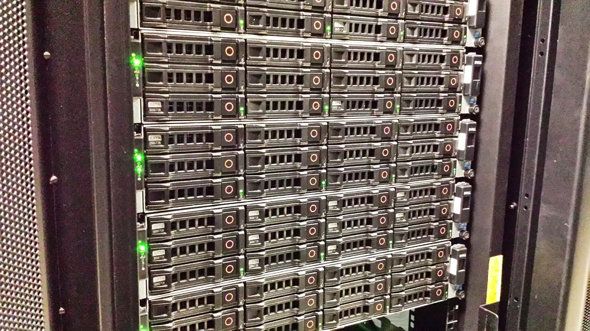
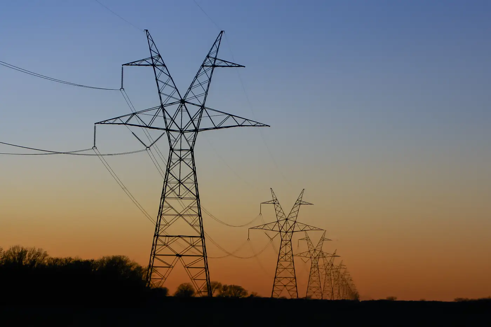

Hvor kommer strømmen fra?
En fortælling i syv korte kapitler. Vi begynder ved noget, du kender, og går baglæns, et skridt ad gangen, hele vejen tilbage til der, hvor strømmen begynder.
Sådan læser du siden: Hvert kapitel stiller ét spørgsmål og svarer kort på det. Bagefter får du at vide, hvorfor det betyder noget, og hvilke af fondens selskaber der arbejder netop dér. Tallene i toppen viser, hvor du er. Du kan trykke på dem for at springe frem eller tilbage.
Kapitel 1 af 7 · Dit spørgsmål
Hvad sker der, når du stiller et spørgsmål til en AI?
Kaffemaskinen tager strøm fra stikkontakten i dit køkken. Det kan du se og høre. Når du skriver et spørgsmål til en AI (kunstig intelligens: et computerprogram, der kan svare i almindeligt sprog), sker der også noget, der bruger strøm, men du ser det ikke.
Din telefon sender bare spørgsmålet videre. Selve svaret bliver regnet ud på store computere i en bygning et helt andet sted. De computere skal også have strøm fra en stikkontakt. Den er bare meget større.
Resten af siden følger den strøm baglæns: fra bygningen, gennem ledningerne, til kraftværket og batteriet og til sidst til det, det hele begynder med.
Fondens selskaber her
Ingen endnu. Dette kapitel handler om dig og din telefon.
Kapitel 2 af 7 · Datacentret
Hvor meget strøm bruger bygningen, der regner svaret ud?

Bygningen hedder et datacenter (en bygning fyldt med computere, kaldet servere, der gemmer data og regner for andre). Det Internationale Energiagentur, IEA, anslår, at verdens datacentre i 2024 brugte omkring 415 TWh. En TWh (terawatttime) er en milliard kilowatttimer, altså den enhed, du kender fra elregningen, ganget med en milliard. Det svarer til omkring 1,5 % af al den strøm, der blev brugt i verden.
Ifølge IEA bruger et typisk datacenter bygget til AI lige så meget strøm som 100.000 husstande. Serverne bruger i gennemsnit omkring 60 % af strømmen. Meget af resten går til køling, for computerne bliver varme.
Fondens selskaber her
Eksempler, ikke anbefalinger. Procenten er selskabets andel af hver afdelings formue pr. 16. oktober 2026. PMINDI og PMINDIAKK er fondens to afdelinger (forklaret i kapitel 7).
- ErockLeverer lokal strøm fra gas til datacentre.PMINDI 0,27 % · PMINDIAKK 0,21 %
- Power Solutions InternationalLaver motorer og strømsystemer, blandt andet til datacentre.PMINDI 0,43 % · PMINDIAKK 0,34 %
Selve datacentrene hører til et andet tema i fonden. Her er kun selskaber fra energitemaet.
Kilde: IEA, Energy and AI: Energy demand from AI og IEA, Energy and AI: Executive summary.
Næste skridt · kapitel 3Hvordan kommer strømmen helt frem til bygningen? →Kapitel 3 af 7 · Elnettet og transformeren
Hvordan kommer strømmen frem til bygningen?

Strømmen rejser gennem elnettet (alle de ledninger, kabler og stationer, der fører strøm fra der, hvor den bliver lavet, til der, hvor den bliver brugt). I Danmark kalder ministeriet de store ledninger for elnettets "motorveje". Dem ejer Energinet. De lokale net er "landevejene" ud til hver enkelt adresse.
Spændingen måles i kV (kilovolt, 1.000 volt). Energinet beskriver de største forbindelser som 400 kV og det net, der forsyner husstande, som 0,4 kV. Undervejs skifter transformere spændingen.
Hvad er en transformer?
Et apparat, der skifter spændingen op eller ned. Høj spænding er god til lange afstande, fordi der går mindre strøm tabt. Lav spænding er nødvendig, før strømmen kommer ind i et hus. Transformere står i store stationer og i små skabe ved vejen.
Fondens selskaber her
Eksempler, ikke anbefalinger. Andel af formuen pr. 16. oktober 2026.
- GE VernovaLeverer udstyr til elnet og elproduktion. Selskabet driver ikke selv værkerne.PMINDI 0,19 % · PMINDIAKK 0,26 %Selskabets side om elnet
- Quanta ServicesBygger og vedligeholder elnet. Selskabet ejer ikke selv ledningerne.PMINDI 0,16 % · PMINDIAKK 0,17 %Selskabets side om elnet
- MYR GroupBygger elektriske anlæg i USA og Canada.PMINDI 0,52 % · PMINDIAKK 0,55 %Selskabets egen side
Kilder: Klima-, Energi- og Forsyningsministeriet: Det kollektive elnet og Energinet: Langsigtet netstruktur for eltransmissionsnettet 2023 (PDF).
Næste skridt · kapitel 4Følg ledningen tilbage. Hvor bliver strømmen lavet? →Kapitel 4 af 7 · Kraftværket, vinden og solen
Hvem laver strømmen?
Strøm bliver lavet på flere måder. I et kraftværk bliver gas, kul eller uran brugt til at drive en generator (en maskine, der laver strøm, når den drejer). En vindmølle drejer generatoren med vinden. En solcelle laver strøm direkte af sollys.
Hvor meget et værk kan levere, måles i MW (megawatt, 1.000 kilowatt) og GW (gigawatt, 1.000 MW). Et eksempel: Elselskabet Vistra skrev 9. januar 2026, at aftaler med Meta dækker 2.176 MW fra værker, der allerede kører. Det er godt 2 GW.
Hvad er baseload?
Baseload (på dansk ofte grundlast) er den mindste mængde strøm, der skal leveres hele tiden, dag og nat. Værker, der kan køre døgnet rundt, dækker den. Sol og vind leverer, når solen skinner, og vinden blæser. Effekt i MW siger, hvor meget der leveres lige nu. TWh fra kapitel 2 siger, hvor meget det bliver til over tid.
Fondens selskaber her
Eksempler, ikke anbefalinger. Andel af formuen pr. 16. oktober 2026.
- VistraProducerer strøm i USA, blandt andet fra gas og atomkraft.PMINDI 0,31 % · PMINDIAKK 0,44 %Selskabets meddelelse
- Southern CompanyReguleret elselskab. Selskabet skriver, at atomkraftværket Plant Vogtle har fire enheder i drift.PMINDI 0,16 % · PMINDIAKK 0,10 %Selskabets side om atomkraft
- First SolarLaver solcellemoduler (de færdige paneler). Selskabet laver panelerne, men driver ikke selv kraftværker.PMINDI 0,39 % · PMINDIAKK 0,47 %Selskabets side om produktionen
- OkloUdvikler små atomkraftanlæg. Det er endnu ikke et kommercielt kraftværk.PMINDI 0,17 % · PMINDIAKK 0,18 %Selskabets egen side
Vind: Elselskabet NextEra Energy har ifølge dataene også vind blandt sine kilder (PMINDI 0,24 % · PMINDIAKK 0,19 %). Ingen af fondens energiselskaber er beskrevet som producent af vindmøller.
Kilde til baseload: U.S. Energy Information Administration, ordliste (engelsk). Om sol og vind: Klima-, Energi- og Forsyningsministeriet: Spørgsmål og svar om 400 kV-forbindelsen (PDF).
Næste skridt · kapitel 5Hvad nu, hvis værket stopper, eller solen går ned? →Kapitel 5 af 7 · Lagring og batterier
Hvad sker der, når strømmen svigter?
Et datacenter må helst aldrig gå i stå. Derfor har det en UPS (uafbrydelig strømforsyning: batterier, der tager over med det samme, hvis strømmen forsvinder) og reservegeneratorer, der kan starte bagefter. IEA skriver, at de sjældent bliver brugt, men at de er nødvendige, fordi datacentre skal leve op til meget høje krav om stabil drift.
Ude på elnettet står der også store batterier. De gemmer strøm, når der er meget af den, og afleverer den igen senere.
Fondens selskaber her
Eksempler, ikke anbefalinger. Andel af formuen pr. 16. oktober 2026.
- Fluence EnergyLeverer batterisystemer og software, der lagrer strøm på elnettet og afleverer den igen.PMINDI 0,53 % · PMINDIAKK 0,50 %Selskabets egen side
- GeneracFremstiller reservegeneratorer.PMINDI 0,51 % · PMINDIAKK 0,48 %Selskabets egen side
- Eos Energy EnterprisesLaver zinkbatterier til elnettet.PMINDI 0,14 % · PMINDIAKK 0,16 %Selskabets side om produktionen
Kapitel 6 af 7 · Brændslet og råstofferne
Hvad begynder det hele med?
Mange kraftværker brænder naturgas (gas, der bliver hentet op fra undergrunden). Atomkraftværker bruger uran.
Hvad er uran, og hvad betyder "berige"?
Uran er et tungt metal, der bliver gravet op af jorden. Kun ca. 0,7 % af naturligt uran er den slags (U-235), der kan spaltes og give varme i en reaktor. De fleste reaktorer skal bruge 3-5 %. At berige betyder at øge den andel.
Ledningerne kræver metal. IEA skriver, at elnettet kræver enorme mængder kobber og aluminium, og at kobber er en hjørnesten i al teknologi, der har med strøm at gøre.
Fondens selskaber her
Eksempler, ikke anbefalinger. Andel af formuen pr. 16. oktober 2026.
- Expand EnergyProducerer naturgas i USA.PMINDI 0,66 % · PMINDIAKK 0,64 %Selskabets egen side
- Centrus EnergyBeriger uran til brændsel. Selskabet er hverken kraftværk eller mine.PMINDI 0,18 % · PMINDIAKK 0,19 %Selskabets side om brændsel
Fondens selskaber inden for kobber og andre metaller hører til temaet Råstoffer, så de er ikke med her.
Kilder: World Nuclear Association: Uranium Enrichment (engelsk) og IEA: The Role of Critical Minerals in Clean Energy Transitions.
Næste skridt · kapitel 7Nu kender du vejen. Hvor kommer fonden ind? →Kapitel 7 af 7 · Fonden
Hvad har det med fonden at gøre?
NewDeal Invest er en investeringsfond: pengene er spredt ud på mange børsnoterede selskaber. Fonden har to afdelinger. PMINDI er udloddende (udbyttet bliver udbetalt til investorerne), og PMINDIAKK er akkumulerende (afkastet bliver investeret igen i fonden).
Pr. 16. oktober 2026 havde 69 selskaber i PMINDI energi som hovedtema. Tilsammen udgjorde de 16,96 % af afdelingens formue. I PMINDIAKK var det 68 selskaber og 17,07 %. Hvert af energiselskaberne fylder under 1 %. Selskaberne på denne side er eksempler fra hvert sted på strømmens vej. De er ikke udvalgt som anbefalinger.
Kilde: fondens beholdningsdata pr. 16. oktober 2026 og central investorinformation (PMINDI) og (PMINDIAKK).
Det ved du nu
- Dit spørgsmål til en AI bliver regnet ud i et datacenter, som skal have meget strøm hele tiden.
- Strømmen bliver lavet i kraftværker, vindmøller og solceller, rejser gennem elnettet og bliver holdt klar af batterier og reserver.
- Det hele begynder med brændsel og metaller, og fondens energiselskaber arbejder hver især på ét sted på den vej.
Risiko: Historisk afkast er ingen garanti for fremtidigt afkast. Du kan tabe penge. Fondens risikoklasse er 5 på en skala fra 1 til 7 ifølge den centrale investorinformation. Siden forklarer og er ikke investeringsrådgivning eller en opfordring til at købe eller sælge.
Fotos fra Wikimedia Commons: kaffe og telefon (www.Pixel.la, CC0), datacenter (Ontariodatacenter, CC BY-SA 4.0), højspændingsmaster (Matthew T Rader, CC BY-SA 4.0).
.jpg){kind=link}